## load the data (not available, this will lead to an error)##
all_U = jnp.array([ 0. , 0.25, 0.5 , 0.75, 1. , 1.25, 1.5 , 1.75, 2. ,
2.25, 2.5 , 2.75, 3. , 3.25, 3.5 , 3.75, 4. , 4.25,
4.5 , 4.75, 5. , 5.25, 5.5 , 5.75, 6. , 6.25, 6.5 ,
6.75, 7. , 7.25, 7.5 , 7.75, 8. , 8.25, 8.5 , 8.75,
9. , 9.25, 9.5 , 9.75, 10. , 10.25, 10.5 , 10.75, 11. ,
11.25, 11.5 , 11.75, 12. ])
all_T = jnp.array([0.005, 0.01 , 0.015, 0.02 , 0.025, 0.03 , 0.035, 0.04 , 0.045,
0.05 , 0.055, 0.06 , 0.065, 0.07 , 0.075, 0.08 , 0.085, 0.09 ,
0.095, 0.1 , 0.105, 0.11 , 0.115, 0.12 , 0.125, 0.13 , 0.135,
0.14 , 0.145, 0.15 , 0.155, 0.16 , 0.165, 0.17 , 0.175, 0.18 ,
0.185, 0.19 , 0.195, 0.2 , 0.205, 0.21 , 0.215, 0.22 , 0.225,
0.23 , 0.235, 0.24 , 0.245, 0.25 , 0.255, 0.26 , 0.265, 0.27 ,
0.275, 0.28 , 0.285, 0.29 , 0.295, 0.3 ])
N = 16
with open('cpVAE2_FKM_datasetL4.pkl', 'rb') as f:
data = pickle.load(f)Falinov-Kimbal model
This notebook presents how to use QDisc to reproduce the results on the Falicov-Kimball model (FKM).
It is one of the simplest lattice models of interacting electrons. We consider the spineless FKM at half filling on a \(L\times L\) square lattice, described by the Hamiltonian \[ H = -t \sum_{\langle i,j\rangle} \big( d_i^\dagger d_j + d_j^\dagger d_i \big) + U \sum_i \left( f_i^\dagger f_i - \tfrac{1}{2} \right)\left( d_i^\dagger d_i - \tfrac{1}{2} \right). \] Here, \(t\) denotes the nearest-neighbor hopping amplitude of the itinerant \(d\) fermions and is set to 1. The second term describes a local repulsive interaction of strength \(U\) between the localized (heavy) \(f\) fermions and the itinerant (light) \(d\) fermions occupying the same lattice site. The shifts by \(-1/2\) enforce particle-hole symmetry and guarantee half filling.
dataset and training
The data come from a system size of \(N=4\times4\). One part of the data corresponds to the configuration of the localized \(f\) particles, with binary entries \(0\) and \(1\) indicating unoccupied and occupied sites, respectively. Another part corresponds to the local densities of the itinerant \(d\) particles and take continuous values in the interval \([0,1]\). We treat the interaction strength \(U\in[0,12]\) and the temperature \(T\in[0.005,0.3]\) as tuning parameters. The dataset was created from Monte Carlo simulations; further details can be found in https://tinyurl.com/5yt75nwy
## cast everything in a QDisc Dataset object ##
from qdisc.dataset.core import Dataset
dataset = Dataset(data=data, thetas=[all_T, all_U], data_type='hybrid', local_dimension=2, local_states=jnp.array([0,1]))## use Tranformer encoder and decoder ##
from qdisc.nn.core import Transformer_encoder, Transformer_decoder
from qdisc.vae.core import VAEmodel, VAETrainer
encoder = Transformer_encoder(latent_dim=5, d_model=16, num_heads=2, num_layers=3, data_type='hybrid')
decoder = Transformer_decoder(d_model=32, num_heads=4, num_layers=3, data_type='hybrid')
myvae = VAEmodel(encoder=encoder, decoder=decoder)
myvaetrainer = VAETrainer(model=myvae, dataset=dataset)## Training ##
num_epochs = 50
alpha = 0.8
beta = 0.45
lr = 0.0001
myvaetrainer = VAETrainer(model=myvae, dataset=dataset)
key = jax.random.PRNGKey(6750)
myvaetrainer.train(num_epochs=num_epochs,
batch_size=10000,
beta=beta,
alpha=alpha,
gamma=0.,
key=key,
printing_rate=5,
learning_rate = lr,
re_shuffle=False)
myvaetrainer.plot_training(num_epochs=num_epochs)
myvaetrainer.compute_and_plot_repr2d(theta_pair=(0,1))Start training...
epoch=0 step=0 loss=14.992286682128906 recon=12.066333770751953
logvar=[ 0.17164478 -0.7916552 0.59649426 -0.20737162 0.22081801]
epoch=5 step=0 loss=-4.412041664123535 recon=-4.728668689727783
logvar=[-0.02302684 -1.411141 -0.01582469 -0.01229799 -0.13648185]
epoch=10 step=0 loss=-5.042297840118408 recon=-5.741966724395752
logvar=[-1.4142735e-02 -3.0865104e+00 -1.4765011e-02 -1.6659213e-02
-2.2206940e-03]
epoch=15 step=0 loss=-5.661174774169922 recon=-6.669913291931152
logvar=[-3.0383343e-01 -4.1715732e+00 -1.5086111e-02 2.0773024e-03
-7.9769846e-03]
epoch=20 step=0 loss=-4.9785661697387695 recon=-6.233368873596191
logvar=[-9.5500028e-01 -4.6541462e+00 -8.8674333e-03 -3.8200682e-03
-8.4259398e-03]
epoch=25 step=0 loss=-6.249385356903076 recon=-7.600369930267334
logvar=[-1.2291127e+00 -4.7380981e+00 -1.2818130e-02 -1.0840525e-03
-9.3268533e-04]
epoch=30 step=0 loss=-6.303691387176514 recon=-7.699682235717773
logvar=[-1.3750013e+00 -4.8349504e+00 -6.5440750e-03 -2.2832206e-03
-7.9421215e-03]
epoch=35 step=0 loss=-6.549737930297852 recon=-7.946473121643066
logvar=[-1.4173565e+00 -4.7895508e+00 -6.5624756e-03 -1.4332586e-03
-5.0238385e-03]
epoch=40 step=0 loss=-6.4514617919921875 recon=-7.923905372619629
logvar=[-1.5850863e+00 -4.9382653e+00 -5.9156418e-03 -5.4327883e-03
-3.8137289e-03]
epoch=45 step=0 loss=-6.6568098068237305 recon=-8.144415855407715
logvar=[-1.6262773e+00 -4.9887724e+00 -4.0637008e-03 -8.9475038e-03
-3.1249989e-03]
Training finished.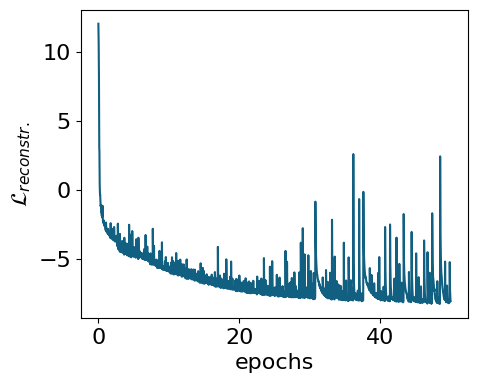
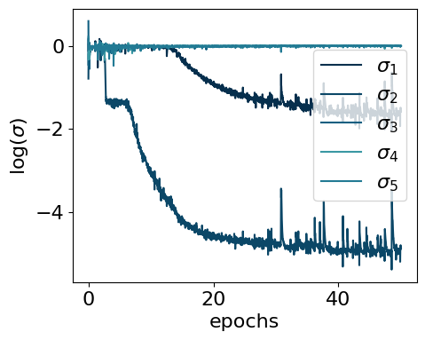
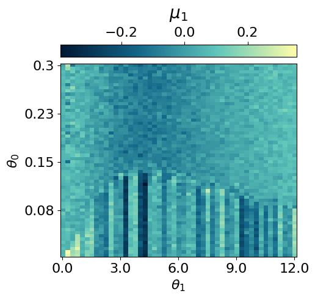
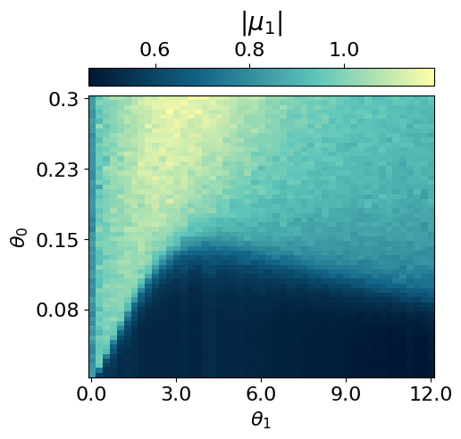
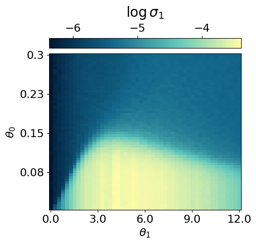
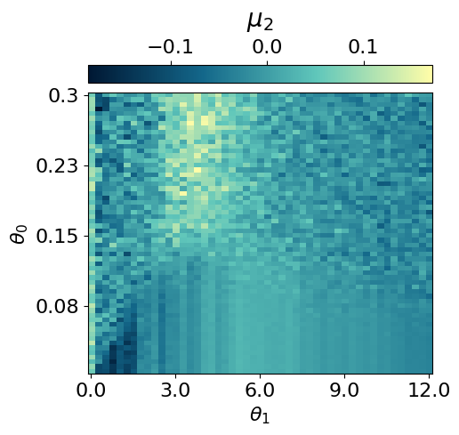
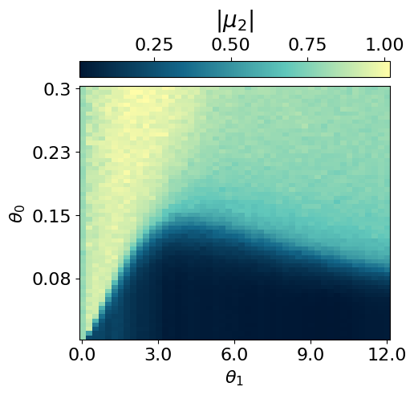
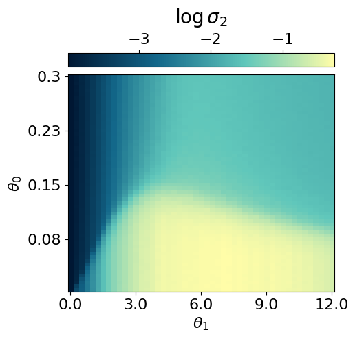
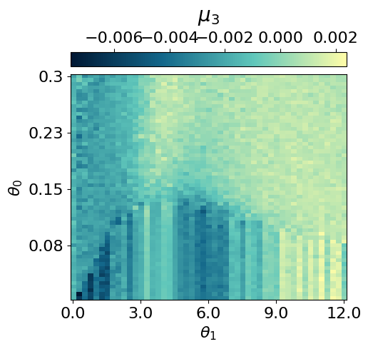
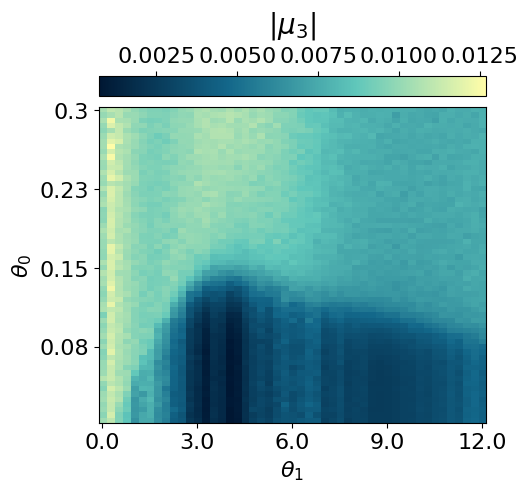
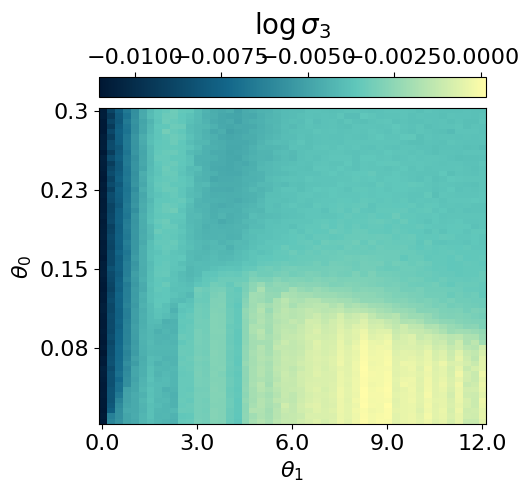
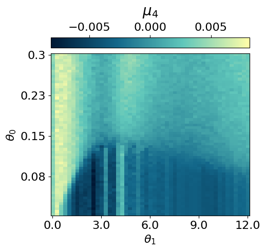
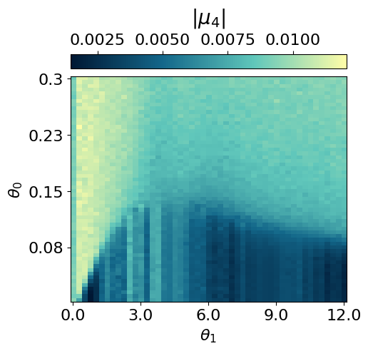
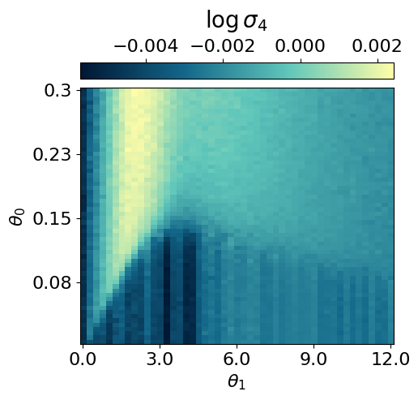
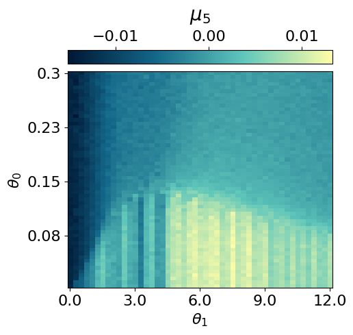
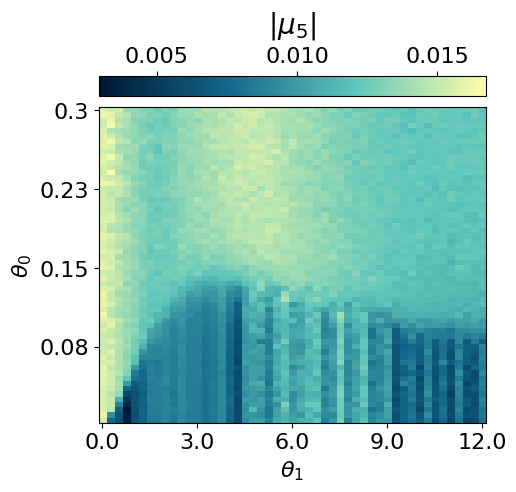
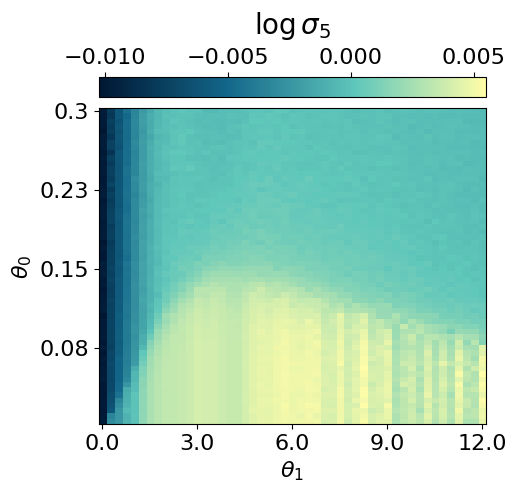
## saving the data ##
all_data = myvaetrainer.get_data()
with open('FKM_data_cpVAE2_QDisc2.pkl', 'wb') as f:
pickle.dump(all_data, f)Looking at the conditional probabilities
As in the Radberg case, we can examine the conditional probabilities output by the decoder to understand the ordering at different locations in the parameter space.
with open('FKM_data_cpVAE2_QDisc2.pkl', 'rb') as f:
all_data = pickle.load(f)state = train_state.TrainState.create(
apply_fn=myvaetrainer.model.apply,
params=all_data['params'],
tx=myvaetrainer.opt
)
myvaetrainer.state = stateOP
The ordered phase (OP) is characterised by a checkerboard pattern of f and d particles. There is also interspecies repulsion induced by U, which can be visualised by examining the conditional probabilities within the OP at low and high U values.
locations = [(2,5), (2,40)]
key = jax.random.PRNGKey(6795)
all_cp = []
for i,j in locations:
f_out, d_out = myvaetrainer.get_cp(dataset.data[i,j])
p_f = jnp.exp(f_out)[...,1]
p_d = d_out[...,0]
cp = jnp.zeros((jnp.shape(dataset.data)[2],2*N))
cp = cp.at[:,0::2].set(p_f)
cp = cp.at[:,1::2].set(p_d)
all_cp.append(cp)
plt.rcParams['font.size'] = 16
plt.figure(figsize=(5,5),dpi=100)
plt.imshow(jnp.mean(cp*dataset.data[i,j][:,0][:,None],axis=0).reshape(4,8), cmap=cmap_brown2, aspect='auto')#,vmin=0.3)
cbar = plt.colorbar(orientation="horizontal", pad=0.03, location="top")
cbar.set_label(r'cp: $T={0:.2f}$, $U={1:.2f}$'.format(all_T[i], all_U[j]), fontsize=20, labelpad=10)
all_data['all_cp'] = all_cp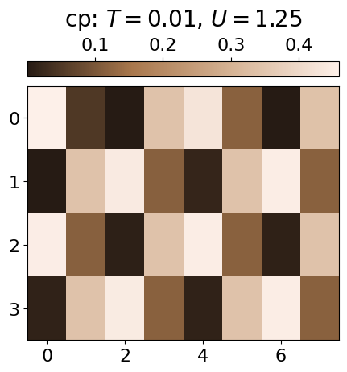
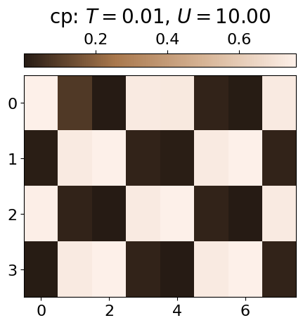
Repulsion
The repulsion between the species can also be visualised throughout the entire parameter space by calculating the average probability of a site being occupied by both an f and a d particle.
key = jax.random.PRNGKey(6845)
cp_fd = jnp.zeros((dataset.data.shape[0],dataset.data.shape[1]))
for i in range(len(all_T)):
for j in range(len(all_U)):
f_out, d_out = myvaetrainer.get_cp(dataset.data[i,j])
p_f = jnp.exp(f_out)[...,1]
p_d = d_out[...,0]
cp = jnp.zeros((jnp.shape(dataset.data)[2],2*N))
cp = cp.at[:,0::2].set(p_f)
cp = cp.at[:,1::2].set(p_d)
cp_fd = cp_fd.at[i,j].set(jnp.mean(p_f*p_d))plt.rcParams['font.size'] = 16
plt.figure(figsize=(5,4),dpi=100)
plt.imshow(jnp.flipud(cp_fd), cmap=cmap_brown2, aspect='auto')#,vmin=0.,vmax=0.8)
cbar = plt.colorbar(orientation="horizontal", pad=0.03, location="top")
cbar.set_label(r'cp(f)*cp(d)', fontsize=20, labelpad=10)
plt.xlabel(r'$U$')
plt.ylabel(r'$T$')
plt.xticks([i for i in range(0,len(all_U)+1,8)], [str(all_U[i]) for i in range(0,len(all_U)+1,8)])
plt.yticks([i for i in range(1,len(all_T),10)], [str(all_T[len(all_T)-i]) for i in range(1,len(all_T),10)])
''
plt.show()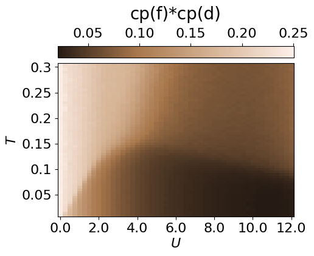
all_data['cp_fd'] = cp_fdIPR
From the conditional probabilities, one can also compute an inverse participation ratio (IPR). This measures the degree of localisation of f/d particles and highlights the weak localisation region.
key = jax.random.PRNGKey(6795)
all_cp = []
IPR_d = jnp.zeros((dataset.data.shape[0],dataset.data.shape[1]))
IPR_f = jnp.zeros((dataset.data.shape[0],dataset.data.shape[1]))
IPR_fd = jnp.zeros((dataset.data.shape[0],dataset.data.shape[1]))
for i in range(len(all_T)):
for j in range(len(all_U)):
f_out, d_out = myvaetrainer.get_cp(dataset.data[i,j])
p_f = jnp.exp(f_out)[...,1]
p_d = d_out[...,0]
cp = jnp.zeros((jnp.shape(dataset.data)[2],2*N))
cp = cp.at[:,0::2].set(p_f)
cp = cp.at[:,1::2].set(p_d)
all_cp.append(cp)
IPR_d = IPR_d.at[i,j].set(jnp.mean(p_d**2))
IPR_f = IPR_f.at[i,j].set(jnp.mean(p_f**2))
IPR_fd = IPR_fd.at[i,j].set(jnp.mean(p_f**2*p_d**2))plt.rcParams['font.size'] = 16
plt.figure(figsize=(5,4),dpi=100)
plt.imshow(jnp.flipud(IPR_f), cmap=cmap_brown2, aspect='auto')#,vmin=0.,vmax=0.8)
cbar = plt.colorbar(orientation="horizontal", pad=0.03, location="top")
cbar.set_label(r'IPR_f', fontsize=20, labelpad=10)
plt.xlabel(r'$U$')
plt.ylabel(r'$T$')
plt.xticks([i for i in range(0,len(all_U)+1,8)], [str(all_U[i]) for i in range(0,len(all_U)+1,8)])
plt.yticks([i for i in range(1,len(all_T),10)], [str(all_T[len(all_T)-i]) for i in range(1,len(all_T),10)])
plt.show()
plt.rcParams['font.size'] = 16
plt.figure(figsize=(5,4),dpi=100)
plt.imshow(jnp.flipud(IPR_d), cmap=cmap_brown2, aspect='auto')#,vmin=0.,vmax=0.8)
cbar = plt.colorbar(orientation="horizontal", pad=0.03, location="top")
cbar.set_label(r'IPR_d', fontsize=20, labelpad=10)
plt.xlabel(r'$U$')
plt.ylabel(r'$T$')
plt.xticks([i for i in range(0,len(all_U)+1,8)], [str(all_U[i]) for i in range(0,len(all_U)+1,8)])
plt.yticks([i for i in range(1,len(all_T),10)], [str(all_T[len(all_T)-i]) for i in range(1,len(all_T),10)])
plt.show()
plt.rcParams['font.size'] = 16
plt.figure(figsize=(5,4),dpi=100)
plt.imshow(jnp.flipud(IPR_fd), cmap=cmap_brown2, aspect='auto')#,vmin=0.,vmax=0.8)
cbar = plt.colorbar(orientation="horizontal", pad=0.03, location="top")
cbar.set_label(r'IPR_fd', fontsize=20, labelpad=10)
plt.xlabel(r'$U$')
plt.ylabel(r'$T$')
plt.xticks([i for i in range(0,len(all_U)+1,8)], [str(all_U[i]) for i in range(0,len(all_U)+1,8)])
plt.yticks([i for i in range(1,len(all_T),10)], [str(all_T[len(all_T)-i]) for i in range(1,len(all_T),10)])
plt.show()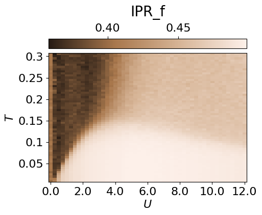
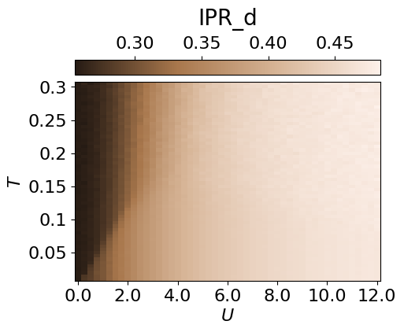
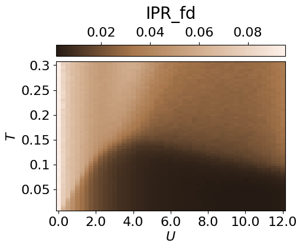
all_data['IPR'] = IPR_fwith open('FKM_data_cpVAE2_QDisc2.pkl', 'wb') as f:
pickle.dump(all_data, f)Clustering the latent representation
In this case, it is not completely obvious how to map the latent representation onto a discrete phase-space diagram. Therefore, we use the Gaussian Mixture Model implemented in QDisc.Clustering. More details are presented in the tutorail on the J1J2 model.
from qdisc.clustering.core import GaussianMixture
#get the latent representation
latvar = all_data['latvar']
mu0abs = latvar['mu0_abs']
mu1abs = latvar['mu1_abs']
theta_pair = (0,1)
#get the experimental parameters thetas to weight on the parameter space distance by alpha and have a smooter clustering
alpha = 0.5
theta1 = dataset.thetas[theta_pair[0]]
theta2 = dataset.thetas[theta_pair[1]]
theta1_norm = (theta1 - jnp.min(theta1)) / (jnp.max(theta1) - jnp.min(theta1))
theta2_norm = (theta2 - jnp.min(theta2)) / (jnp.max(theta2) - jnp.min(theta2))
#vector to perform the GMM one
X = jnp.array([mu0abs.reshape(-1),
mu1abs.reshape(-1),
alpha*jnp.tile(theta1_norm[:,None], reps=(jnp.size(theta2_norm),)).reshape(-1),
alpha*jnp.tile(theta2_norm[None, :], reps=(jnp.size(theta1_norm),)).reshape(-1)]).transpose()
for n_components in [6]:
print('GMM with n_components: {}'.format(n_components))
clusterer = GaussianMixture(
n_components=n_components,
max_iter=500,
init_params="kmeans"
)
clusterer.fit(X, key=jax.random.PRNGKey(4362))
classes = clusterer.predict(X).reshape((jnp.size(theta1),jnp.size(theta2)))
final_classes = jnp.zeros((jnp.size(theta1),jnp.size(theta2)))
for i in range(jnp.size(theta1)):
for j in range(jnp.size(theta2)):
v, c = jnp.unique_counts(classes[i,j])
final_classes = final_classes.at[i,j].set(v[jnp.argmax(c)])
fig_shape = (len(theta1)/10, len(theta2)/10)
plt.rcParams['font.size'] = 16
plt.figure(figsize=fig_shape,dpi=100)
plt.imshow(jnp.flipud(final_classes), aspect='auto')
cbar = plt.colorbar(orientation="horizontal", pad=0.03, location="top")
cbar.set_label(r'classification: #classes: {}'.format(n_components))
plt.xlabel(r'$U$')
plt.ylabel(r'$T$')
plt.xticks([i for i in range(0,len(all_U)+1,8)], [str(all_U[i])[:3] for i in range(0,len(all_U)+1,8)])
plt.yticks([i for i in range(1,len(all_T),10)], [str(all_T[len(all_T)-i]) for i in range(1,len(all_T),10)])
plt.show()GMM with n_components: 6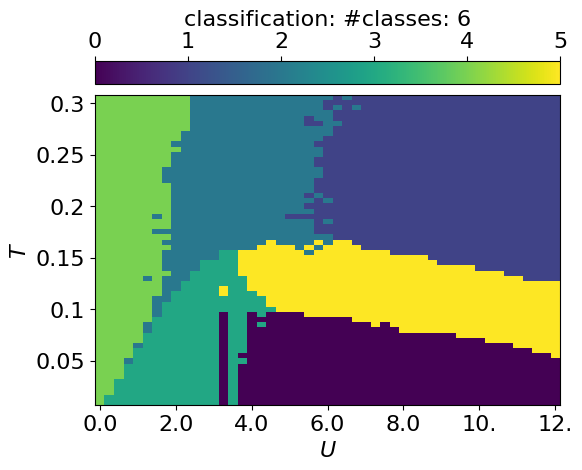
Symbolic regression
In this section, we employ QDisc.SR.SymbolicRegression to investigate the nature of the additional cluster observed in the latent representation. We will use the '2_body_correlator' ansatz with the SR1 objective.
## set the index of the in/out classes for SR1 ##
import matplotlib.colors as mcolors
id_add_cluster = jnp.argwhere(classes == 3)
array_inisde_add_cluster = jnp.zeros((len(all_T),len(all_U)))
array_inisde_add_cluster = array_inisde_add_cluster.at[:14,7:11].add(1)
array_inisde_add_cluster = array_inisde_add_cluster.at[:19,9:11].set(1)
array_inisde_add_cluster = array_inisde_add_cluster.at[:4,3:11].set(1)
array_inisde_add_cluster = array_inisde_add_cluster.at[:9,5:11].set(1)
id_in_add_cluster = jnp.argwhere(array_inisde_add_cluster == 1)
array_outside_add_cluster = jnp.zeros((len(all_T),len(all_U)))
array_outside_add_cluster = array_outside_add_cluster.at[:20,25:].set(1)
id_out_add_cluster = jnp.argwhere(array_outside_add_cluster == 1)
array_add_cluster = jnp.ones((len(all_T),len(all_U)))
for i,j in id_add_cluster:
array_add_cluster = array_add_cluster.at[i,j].set(2)
for i,j in id_in_add_cluster:
array_add_cluster = array_add_cluster.at[i,j].set(3)
for i,j in id_out_add_cluster:
array_add_cluster = array_add_cluster.at[i,j].set(0)
plt.rcParams['font.size'] = 16
plt.figure(figsize=(5,4),dpi=200)
n_bins = 4
bounds = jnp.linspace(0, 4, n_bins + 1)
mid_points = (bounds[:-1] + bounds[1:]) / 2
norm = mcolors.BoundaryNorm(boundaries=bounds, ncolors=cmap_blue.N, clip=True)
plt.imshow(jnp.flipud(array_add_cluster),cmap=cmap_blue, aspect='auto', norm=norm)
cbar = plt.colorbar(orientation="horizontal", pad=0.03, location="top", ticks=mid_points)
cbar.set_label(r'dataset SM1', fontsize=20, labelpad=10)
cbar.set_ticklabels([r'$y=out$', r'not used', r'add. cluster',r'$y=in$'], fontsize=12)
plt.xlabel(r'$U$')
plt.ylabel(r'$T$')
plt.xticks([i for i in range(0,len(all_U)+1,8)], [str(all_U[i]) for i in range(0,len(all_U)+1,8)])
plt.yticks([i for i in range(1,len(all_T),10)], [str(all_T[len(all_T)-i]) for i in range(1,len(all_T),10)])
plt.show()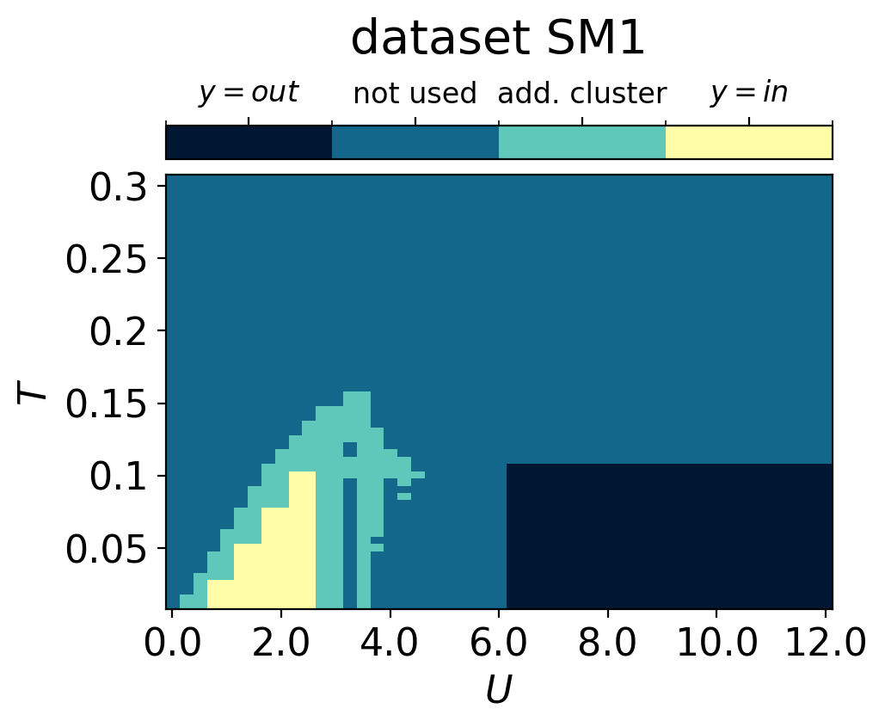
## 2BC with SR1 ##
from qdisc.sr.core import SymbolicRegression
cluster_idx_in = id_in_add_cluster
cluster_idx_out = id_out_add_cluster
f = jnp.arange(0,N,1)
d = jnp.arange(N,2*N,1)
fd = jnp.zeros((2*N,))
fd = fd.at[::2].set(f)
fd = fd.at[1::2].set(d).astype(jnp.int32)
fd = fd.reshape(4,8).tolist()
topology = fd
key = jax.random.PRNGKey(1011)
l1 = 2
mySR = SymbolicRegression(dataset,
cluster_idx_in=cluster_idx_in,
cluster_idx_out=cluster_idx_out,
objective='SR1',
shift_data=True,
add_constant=True)
_ = mySR.train_2BC(key, dataset_size=10000, L1_reg=l1, max_iter=1000)
mySR.plot_alpha(topology=topology, edge_scale=3, name='SR1', threshold=0.)
mySR.plot_alpha(topology=topology, edge_scale=3, name='SR1', threshold=1.)
## plot the classification prediction f(x)>0 ##
p = mySR.compute_and_plot_prediction(name='SR1', class_pred=True, theta_pair=(0,1))
p = mySR.compute_and_plot_prediction(name='SR1', class_pred=False, theta_pair=(0,1))### Start preparing the dataset ###
### Dataset prepared, start the trainnig ###
### Training finished ###
message: STOP: TOTAL NO. OF F,G EVALUATIONS EXCEEDS LIMIT
success: False
status: 1
fun: 0.2666763252831029
x: [-3.365e-02 2.370e-01 ... 1.979e-03 4.940e-01]
nit: 28
jac: [-3.676e-03 3.167e-03 ... -1.641e-04 -7.234e-05]
nfev: 15438
njev: 31
hess_inv: <497x497 LbfgsInvHessProduct with dtype=float64>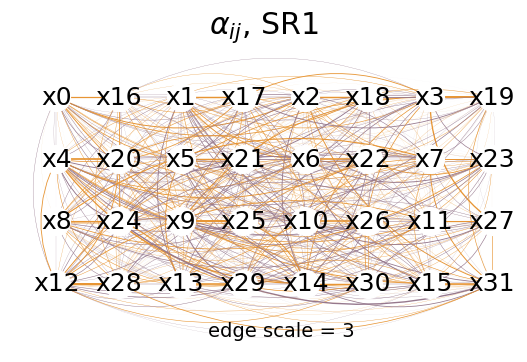
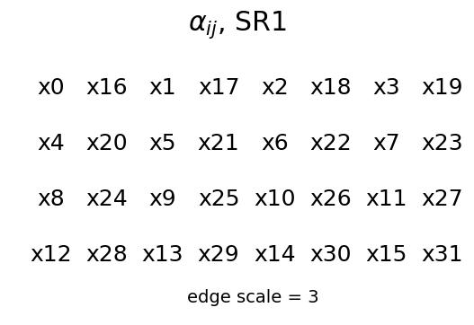
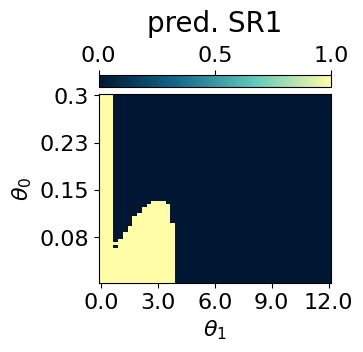
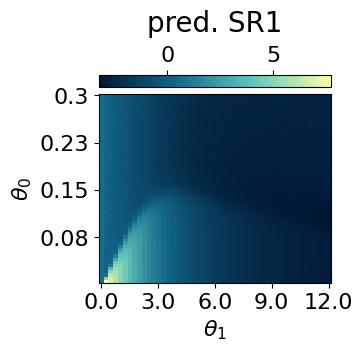
mySR.plot_alpha(topology=topology, edge_scale=10, name='SR1', threshold=0.35)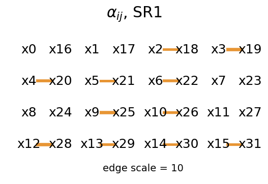